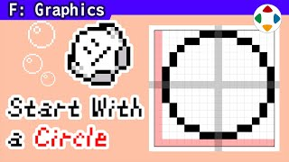
速览
初代 Game Boy《星之卡比》的卡比本体是樱井亲自打点的，敌人和背景也画了不少，还用在红白机版卡比等中。现在的游戏色数非常多，可能参考价值不大，但简单讲讲 Game Boy、红白机等少色数的像素画技巧。红白机和 GB 常用 16×16 点的精灵——精灵是绘画的一个单位，能在画面上流畅移动；卡比也是众所周知的 16 点宽。但在其中画圆时，15 点比 16 点更漂亮：比较两者，15 点更接近正圆，因为能取到中线。在工艺类游戏里建造时，如果单位很粗，也推荐做成能取中线的奇数宽度，各方面都方便。只有黑白两色时要改变质感，例如只画轮廓再加高光就成了泡泡；做成网点能消除球感，反转网点气氛就变了；涂黑只画高光就成了铁球——最低限度也有一定表现幅度。多一色就能用柔边（中间色），是细致表现不可或缺的；反射材质还可以加上表现下方地面反射的反光，从外缘做柔边会漂亮很多（取决于背景色）。这只是像素画的入门，含动画的制作很有味道很有趣。题外话：《星之卡比 梦之泉物语》里，卡比拿到复制能力会稍微变胖，颜色也有点不同。
1. 樱井画的卡比 0:03
初代 Game Boy《星之卡比》的卡比本体，是樱井亲自打点画的。敌人、背景等他画的也不少，还用在了红白机版卡比等作品里。
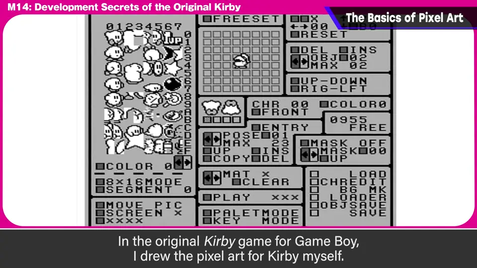
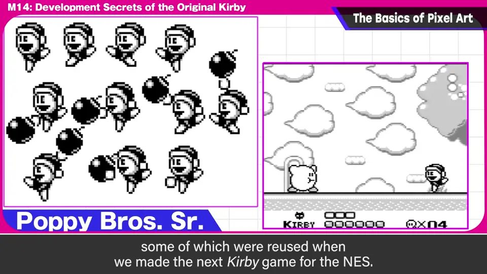
现在的游戏色数非常多，可能不太有参考价值；但还是简单讲讲 Game Boy、红白机等少色数像素画的技巧。
2. 16×16 精灵与圆 0:35
红白机和 Game Boy 常用 16×16 点的精灵。精灵是绘画的一个单位，能在画面上流畅移动。卡比也是众所周知的 16 点宽。
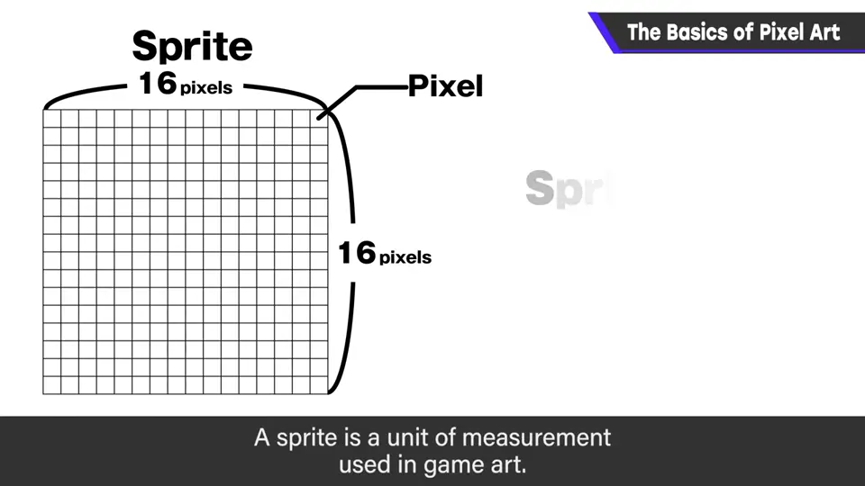
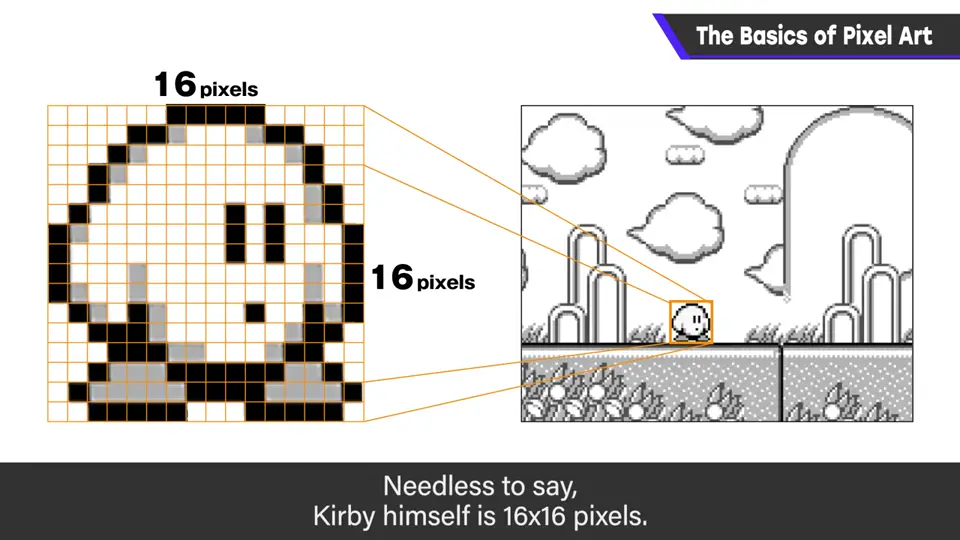
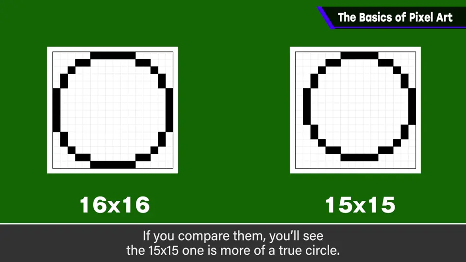
比较一下，15 点更接近正圆——因为能取到中线。
在工艺类游戏中建造时，如果是单位粗的游戏，也推荐做成能取中线的奇数宽度，各方面都方便。
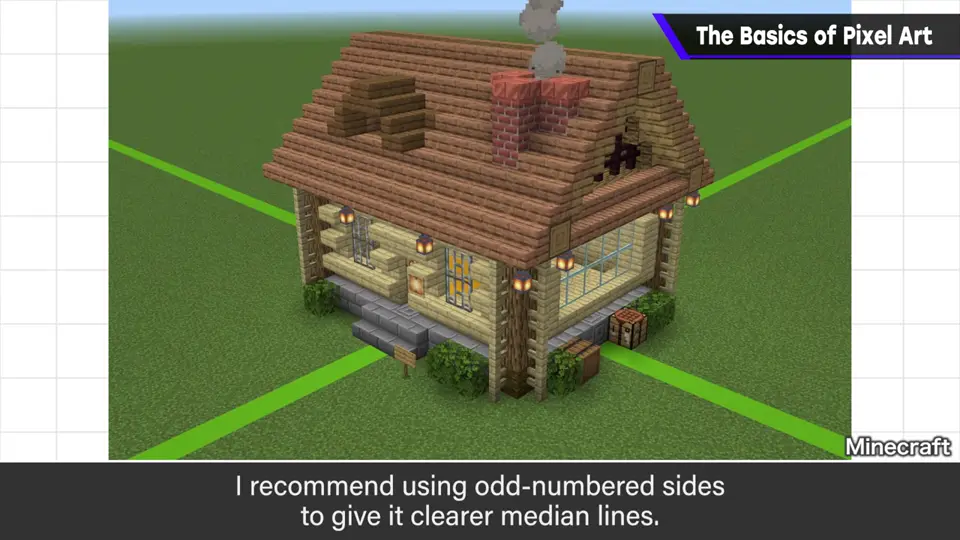
3. 只有黑白两色 1:29
只有黑白两色时，要改变质感：
- 只画轮廓再加高光 → 泡泡。
- 做成网点 → 消除球体感；把网点反转一下，气氛也变得挺不一样。
- 涂黑只画高光 → 铁球。
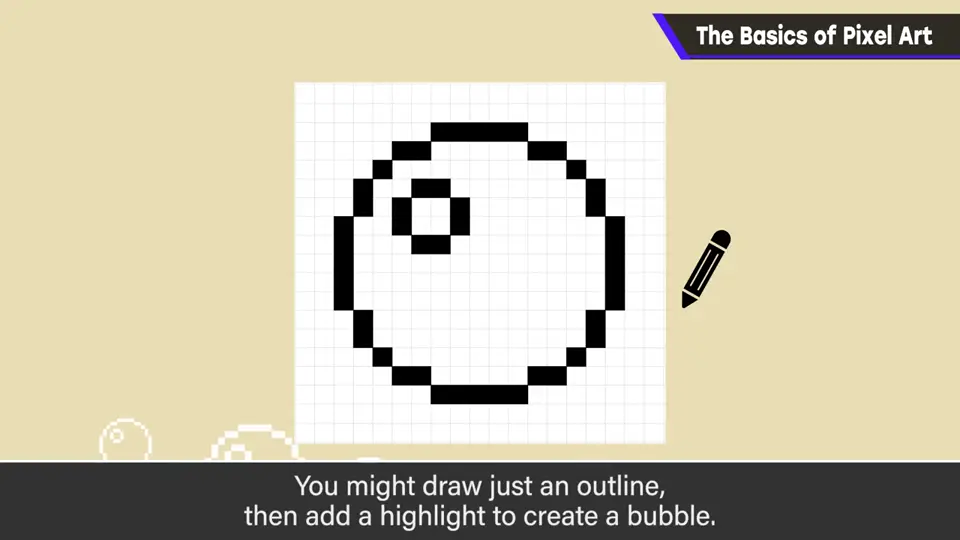
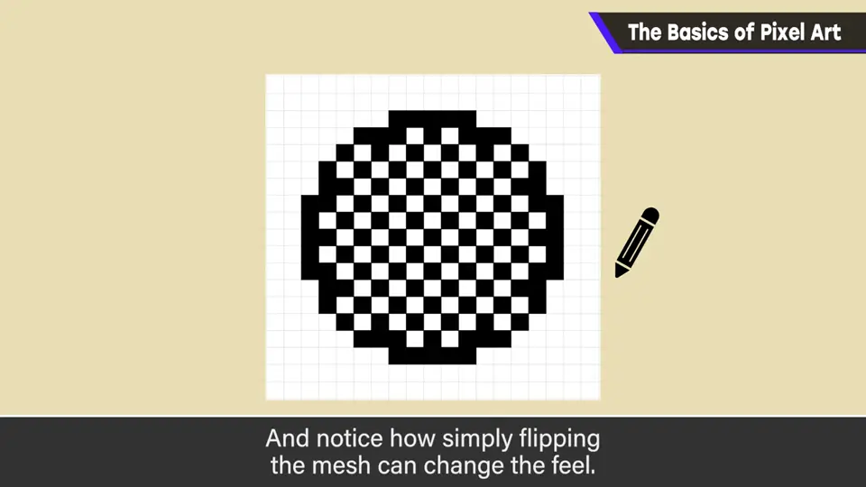
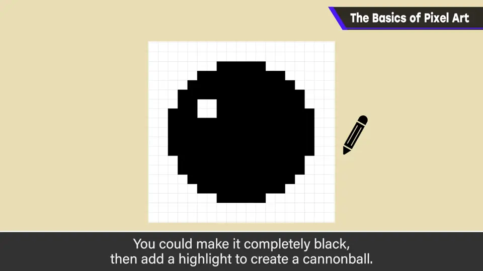
4. 多一色 1:57
能再多用一色，就能用柔边（中间色）——这对细致表现不可或缺。
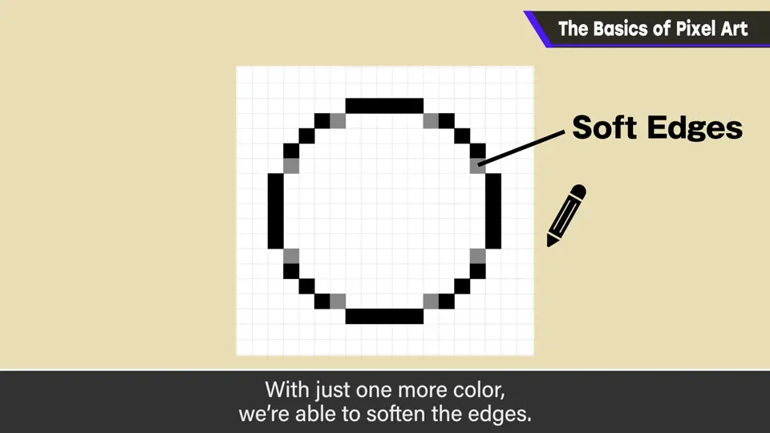
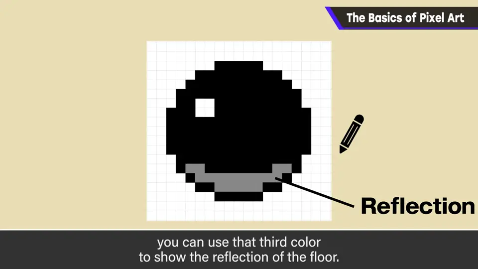
反射材质的话，加上表现下方地面反射的反光也很有效；从外缘做柔边会漂亮很多（不过取决于背景色）。
5. 入门而已 2:20
这只是像素画的入门，含动画的制作很有味道、很有意思。
题外话：知道吗？《星之卡比 梦之泉物语》里，卡比拿到复制能力后会稍微变胖，颜色也有点不同。
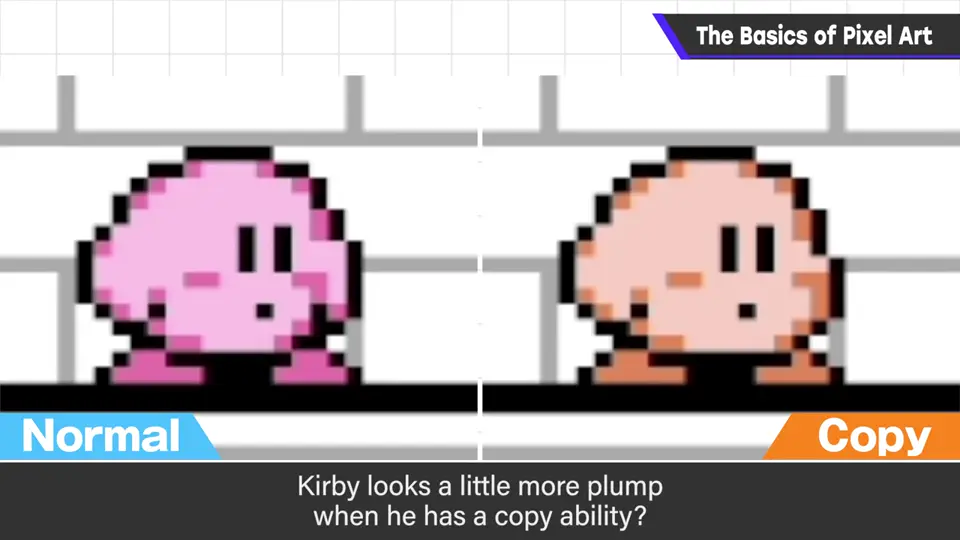
自测题
1. 在 16×16 的精灵里画圆，为什么 15 点更好？
15 点（奇数）能取到中线，更接近正圆。 1:10
2. 只有黑白两色时，怎么画出铁球？
涂黑，只画高光。 1:50
3. 多一种颜色时可以加哪些表现？
柔边（中间色），以及表现地面反射的反光。 2:00